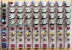
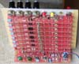
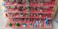
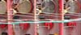
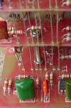
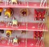

|
Programmer/Sequencer for music synthesizers.
Experienced builders only!The Programmer/Sequencer is a Serge inpired multi-stage sequencer. Unlike most sequencers, this one makes no use of binary counters. Rather, it uses a set of individual stages, each one directly accessible. As such it could be considered to allow "random access". The first sequencer produced by Serge was a 4017 based counter that put out gate pulses. In order to get a control voltage sequencer, the gate outputs were fed to the input stages of a multi-state programmer. Usually built in groups of four, but sometimes coupled through a switch, these programmers would only allow a single stage to be active at any time, outputting the corresponding control voltages to their bussed output jacks. The stages could be selected either via a gate/trigger input or a panel mounted push button. This module replicates the programmer, but with one major exception - up and down inputs allow it to be sequenced without connection to an external gate source. Any stage can be activated at any time by a direct pulse or button press. Up or down pulses will then step it from that stage. To limit the number of steps in the sequence, the pulse (gate) output of a stage is simply routed to the external pulse input for the first stage of the sequence. Note that the first stage used in a sequence need not be the first stage on the panel. For example it would be possible to have the first few stages used as an "introduction", with the sequence automatically looping to a stage in the middle of the panel once the sequence's first run was completed. There is also no theoretical limit to the number of stages that can be used, though I have only tested to a maximum of 10 stages. The maximum number of stages is of course chosen prior to building. The astute will recognise the circuits as having grown from that published in the Synapse article. Make no mistake - it wasn't simply copied. Hundreds of hours of R&D and numerous prototypes were needed to get it right, as the circuit has been taken far beyond its original intentions. A little on how it works:
Simply put, bus "C" is the output of a current source. This source is capable of holding only one stage on at a time. When a second stage is triggered, it deprives the currently latched stage of current, causing it to reset. In doing so, it removes its load from the current source, allowing the recently triggered stage to remain on. The up-down function is provided by a dedicated pulse generator in each stage. Only when that stage is active are the pulse generators enabled. Upon receiving an up or down pulse from the corresponding bus, either the next or previous stage will be sent a trigger pulse.
Construction
Before you start assembly, check the board for etching faults. Look for any shorts between tracks, or open circuits due to over etching. Take this opportunity to sand the edges of the board if needed, removing any splinters or rough edges. (With the boards supplied by me, the edges are already milled, and etching faults are very rare.) When you are happy with the printed circuit board, construction can proceed as normal, starting with the resistors first, followed by the IC socket if used, then moving onto the taller components. Take particular care with the orientation of the polarized components such as electrolytics, diodes, transistors and ICs. When inserting ICs into sockets, take care not to accidentally bend any of the pins under the chip. Also, make sure the notch on the chip is aligned with the notch marked on the PCB overlay. On the rear of the "B" board there are a number of small square pads, near the TL072s and the PSU connector. These pads are in pairs, one on pin 8, and its pair near by on the thick 0V rail, and one on pin 4, and its pair nearby on the 0V rail. These are for 100n 1206 (or even 805) SMD capacitors (or 10n, or 47n - it isn't critical). Put a little solder on one pad. Move the capacitor into position, and re-heat the solder. The capacitor will now be held in place. Solder the opposite end, then go back and tidy up the first joint if needed. Use ceramic monoblock caps, NOT electro or tant. On the rear of the "B" board, below the LM393 there are two square pads connected to pins 4 and 8. These are to allow a 100n monolythic capacitor to be soldered directly across the power pins. This board set is a little different to most CGS boards. There would be too much wiring needed if pots had to be hand wired to the PCBs, so I have gone with a design that mounts as much as possible directly on the PCBs themselves, as well as making parts that do need wiring as close as physically possible to their wiring points. The photographs below will help explain things. If you wish to use a different panel arrangement, it would of course be possible to remote-mount the pots etc, though I expect you would soon be wishing you hadn't. The vertical centers for ALL of the holes is 3/4 of an inch - standard Serge spacing for 8 vertical controls. Horizontal spacing is not fixed, but is best at an inch (Serge standard). Once all the boards have been assembled, each of the stage (A) boards should be mounted in turn to the panel using the pots as mounting brackets. There are 4 pots per board and later wiring will add to structural rigidity, so brackets are not really needed. The push switch, jacks and LED should then be wired to the PCB. (Yes, you can substitute a suitable touch switch for the push switch). Wiring will be easier if you start with the last "A" board first, as that will allow clear access to the solder side of that board as you wire it. Once you reach the final board you will also need to add a pair of bolts and nuts/spacers to mount the "B" board. You will probably find it easier if the bolt head it on the "A" board, the opposite way to what is shown in the photos. Attach the "B" board to the "A" board using the bolts, and wire it to its jacks. The next part is the tricky part - wiring up the buses. using tinned copper wire, run a wire between each corresponding lettered hole through the whole run of PCBs, with the exception of G, H and J. Make sure you include the "B" board! Solder the wires to each of the PCBs. The solder pads have been brought right up to the edge to assist with this. Probably the area that will cause most problems is the G, H and J wiring. Starting from the first (Stage 1) "A" board, a wires is run through the G hole, to the second "A" board it goes through the H hole, and the third "A" board it goes through the J hole. Once soldered to all three boards, this wire is then trimmed. Now starting at the second "A" board, the same procedure is repeated, and so on for the remainder of the "A" boards. The boards at the ends need to be connected to each other as well, following the exact same pattern. The G hole on the second last "A" board goes to the H hole on the last, and via a long wire, the J hole on the first "A" board. The G hole on the last "A" board goes via a long wire to the H hole on the first "A board", and the J hole on the second A board.

Rear view of the prototype module. The modifications are not needed on the production boards. As can be seen, I used a variety of transistors for the purpose of testing suitability. All worked fine. All were general purpose transistors.

End view showing some of the "A" board details.

"B" board mounting. Having only jacks and no pots to support it, the "B" board is connected to the first "A" board using 3mm bolts.

Close up of the inter "A" board wiring. These slanted wires are what connect the up/down triggers between each stage. They are marked "G" and "H" on the schematic and the PCB. The green/white and brown/white wires connect the first and last stages together
 Close up of part of the bus, showing how it continues right through onto the "B" board. One of the mounting bolts can also be seen. Three nuts are used, one clamping the bolt head to the "B" board, and one each side of the "A" board. A spacer could be substituted.

Close up of jack, LED and switch wiring. Jack wiring will vary depending on the chosen jack type. The LED wires should be long enough to reach the PCB if you don't cut them. The switch need only be a single pole, single throw (SPST) type of push button. The ones used here were from the parts box, thus the variety.
If two single pole on-off-on switches are used per stage, each direction can be set independently. If one double pole switch is used per stage, only a single switch per stage is required, though functionality will be reduced. The skip functionality was developed at the suggestion of and in conjunction with Ryk Thekreator.
Resources:
Notes:
Parts list The parts list has been divided into two, one part per board type used. Only one "B" type board and its associated parts will be needed. A minimum of three type "A" boards and associated parts will be needed. This is a guide only. Parts needed will vary with individual constructor's needs. If anyone is interested in buying these boards, please check the PCBs for Sale page to see if I have any in stock.
Can't find the parts? See the parts FAQ to see if I've already answered the question. Also see the CGS Synth discussion group.
Article, art & design copyright 2004 by Ken Stone
| |||||||||||||||||||||||||||||||||||||||||||||||||||||||||||||||||||||||||||||||||||||||||||||||||||||||||||||||||||||||
 It is possible to add skip/stop switches to each stage. What's more, it is possible to do it in such a way that behavior in each direction can be controlled independently. Instead of running wires between pads J, H and G as described above, switches can be wired in as shown in the diagram to the left. Using on-off-on switches will result in each stage having three possible behaviors: Normal, where the stage will activate in sequence; Refuse, where the stage refuses to activate, causing the sequence to stop at the stage before, where it will remain until either the sequence is reversed, or some other manual override forces the sequence away from that stage, and; Skip, where that stage behaves as if it is not there, the following enabled stage activating on the next clock pulse. Setting several steps in a row to Skip will result in all of those stages being skipped.
It is possible to add skip/stop switches to each stage. What's more, it is possible to do it in such a way that behavior in each direction can be controlled independently. Instead of running wires between pads J, H and G as described above, switches can be wired in as shown in the diagram to the left. Using on-off-on switches will result in each stage having three possible behaviors: Normal, where the stage will activate in sequence; Refuse, where the stage refuses to activate, causing the sequence to stop at the stage before, where it will remain until either the sequence is reversed, or some other manual override forces the sequence away from that stage, and; Skip, where that stage behaves as if it is not there, the following enabled stage activating on the next clock pulse. Setting several steps in a row to Skip will result in all of those stages being skipped.